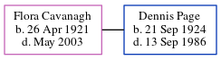

Elsie M Bennett (née Punyer) 1922 - c1979
[ Home ] | [ Calendar ] | [ Surnames Index ] | [ Errors ] | [ Family History ]Elsie Punyer, the wife of Frederick Arthur Bennett (the third cousin once-removed on the mother's side of Nigel Horne), was born in Faversham, Kent, England on 17 Jan 19221,2. She married Frederick (a brewery maintenance machinist) in Sittingbourne, Kent, England around Feb 19563.
She died c. Aug 1979 in Canterbury, Kent, England2.
Citations
- England & Wales births 1837-2006 - Findmypast
- England & Wales deaths 1837-2007 - Findmypast
- England & Wales Marriages 1837-2005 - Findmypast
Media
England & Wales marriages 1837-2005 - BMD/M/1956/1/AZ/001303/002
England & Wales births 1837-2006 - BMD/B/1922/1/AZ/001191/127
England & Wales deaths 1837-2007 - BMD/D/1979/3/AZ/000072/138
Family Tree
Map
Generated by ged2site. Last updated on Jul 3, 2024
Known Issues
1939 UK register information missing